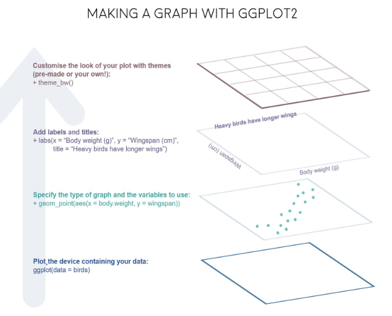

基本概念
library(ggplot2)
library(gapminder) # 数据集
gm <- gapminder
p <- ggplot(data = gm, mapping = aes(
x = gdpPercap,
y = lifeExp,
color = continent,
fill = continent
))
print(
p +
geom_point() +
geom_smooth(method = "loess") +
scale_x_log10(labels = scales::dollar)
)## `geom_smooth()` using formula = 'y ~ x'

这个过程类似画一幅水彩画，有很多图层。
图形部件
一张统计图就是从数据到几何形状(geometic object, geom)所包含的图形属性(aesthetic attribute, aes)的一种映射
- data: 数据框 data.frame
- aes: 数据框中的数据变量映射到图形属性
- x
- y
- color
- size
- shape
- alpha
- geoms: 集合形状
- geom_bar()
- geom_density()
- geom_freqpoly()
- geom_histogram()
- geom_violin()
- geom_boxplot()
- geom_col()
- geom_point()
- geom_smooth()
- geom_tile()
- geom_density2d()
- geom_hex()
- geom_count()
- geom_text()
- geom_sf()
- stats
- scales
- coord
- facet
- layer
- theme
- save
开始
检查是否有缺失值
library(gapminder)
library(tidyverse)
gapdata <- gapminder
gapdata %>%
summarise(
across(everything(), ~ sum(is.na(.)))
)## # A tibble: 1 × 6
## country continent year lifeExp pop gdpPercap
## <int> <int> <int> <int> <int> <int>
## 1 0 0 0 0 0 0基本绘图
柱状图
用于离散变量
gapdata %>%
ggplot(aes(x = continent)) +
geom_bar()
gapdata %>%
ggplot(aes(x = reorder(continent, continent, length))) +
geom_bar()
gapdata %>%
ggplot(aes(x = reorder(continent, continent, length))) +
geom_bar() +
coord_flip()
gapdata %>% count(continent)## # A tibble: 5 × 2
## continent n
## <fct> <int>
## 1 Africa 624
## 2 Americas 300
## 3 Asia 396
## 4 Europe 360
## 5 Oceania 24gapdata %>%
distinct(continent, country) %>% # exclude fields with same continent & contry
ggplot(aes(x = continent)) +
geom_bar()
直方图
用于连续变量
gapdata %>%
ggplot(aes(lifeExp)) +
geom_histogram()## `stat_bin()` using `bins = 30`. Pick better value with `binwidth`.
gapdata %>%
ggplot(aes(lifeExp)) +
geom_histogram(binwidth = 1) # geom_histograms()默认使用position="stack"
gapdata %>%
ggplot(aes(x = lifeExp, fill = continent)) +
geom_histogram()## `stat_bin()` using `bins = 30`. Pick better value with `binwidth`.
频次图
gapdata %>%
ggplot(aes(x = lifeExp, color = continent)) +
geom_freqpoly()## `stat_bin()` using `bins = 30`. Pick better value with `binwidth`.